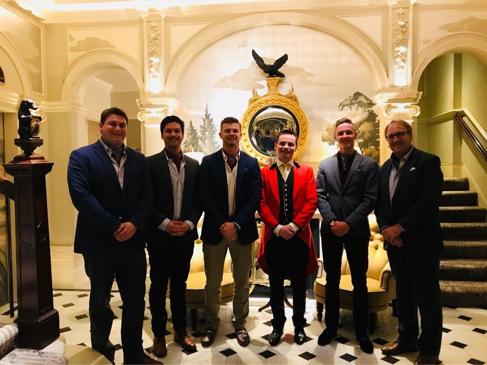

This morning the group was assembled, by demand, at 6:45am in Richmond Court 2A, about 2 hours earlier than necessary. Comatose, the group of OU Zombies stumbled their way through the dark to the Tower of London for a private changing of the keys ceremony. Turns out, even Beefeaters don’t rise this early on Monday; the ceremony was at 9:00am. Engle pushed the group through the tower gate to a Starbucks, were the group started to wake up. Turns out “Wendy” and “Petrie” and “Jazz” joined us, too!
Here we Will Find Wendy, our Fearless Leader
We returned to the Tower and our group was allowed to enter by itself to watch the yeomen of the guard and beef eaters march up and down a cobble stone street. The Master Sergeant snapped “You came 6,000 miles to ask that question?” as a response to each of our polite inquiries about the keys that were just exchanged. The time was now 9:01am, and we had to kill another hour, so we followed Stephanie to a bank of gift shops that she had spied out.
At 10:00am we emerged with our plastic souvenirs and T-shirts only to discover the entry line had queued to considerable length. Born for moments such as this, Engle jumped to the front of the line, and was soon motioning for the group to join him there. Just how does he do this? As the first group in, we raced to the Crown Jewels and saw incomparable riches housed there. We walked the grounds to pay homage at Anne Boleyn’s execution site, and went to the roosting pens of the ravens. There, Nic met Hazel, and learned of her very nasty hunting tricks. After finding Stephanie in a gift shop, the group was ready to return to St. Paul’s, a quick walk up the hill.
Yeomen of the Guard
Nic Disrespectfully Taking Picture with Hands in his Pockets
We wanted to climb to the cupola of St. Paul’s, but budgetary restraints and American sensibilities simply couldn’t justify the 16-pound fee. Instead, we decided to use those pounds at a French Bistro across the street. Anticipation built through the entire lunch, for the afternoon scavenger hunt was now mere minutes away; one team (no names), even tried a last minute “Hail Mary” and asked to merge with the other team. Engle didn’t buy the strategy, and envelopes were passed out, and the starting gun fired.
The boys vs. girls scavenger hunt took contestants all over London with a whirl of clues and tube rides—and 80 flights of stairs and 20,000 steps. End result: the girls came back to the apartment first, but the boys (arriving about an hour later, blaming it all on a dead cell phone) had found all 13 clues. Tie? Some of the highlights were: finding the most expensive shoe at Harrods, chasing a swan up the Mall in order to get a fresh feather, videoing a boater on the River Thames, finding the head of Jeremy Bentham (turns out it was shipped to New York for a display), a recording of “mind the gap,” yet another visit to Henry VIII’s codpiece, Da Vinci’s personal notebook, and the Rosetta Stone just to name a few.
The angst of the game, and the sorry excuse of the dried up cell phone battery, was soon forgotten as the men got suited up for the evening. It was Chase’s 21st birthday, and Engle vowed to celebrate in style. A black taxi cab was hailed, and Chase got to snap “The Goring” to our Irish driver. We walked the red carpet through the marbled lobby to the cocktail lounge. We enjoyed amazing conversation over Negronis and G&T’s, and all shared advice for Chase on his 21st. We also promised to relive the moment on June 4, 2047! Our server, Daniel, was also keen on our conversation, and gifted us with Goring pens, and allowed us to see the lavish Cloak Room and took our pictures in the foyer. Alas, the night had to end and Flourence flagged us a cab and we found it comical that he road in the back of the cab back to the Goring until it pulled up to the red carpet. Nic got his hands slapped as he tried to open the door himself; he shamefully had to recede and allow Flourence to do his job. It was a sad ride back to Richmond Court, our night of aristocracy at an end.
The Guys at the Goring
The Goring Staff
